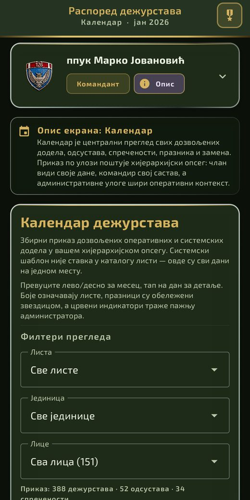
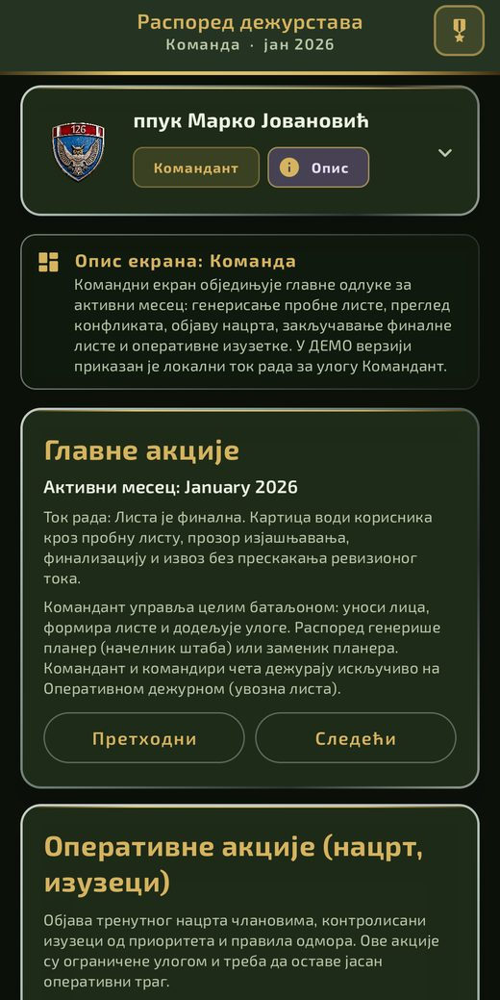

Puna bataljonska hijerarhija, generisanje i finalizacija rasporeda, odsustva i sprečenosti, hitne zamene, SMS obaveštenja i lokalni AI pomoćnik — jedna aplikacija umesto Excel tabela, papira i grupa na Viberu. Ovaj demo se otvara već popunjen scenarijem: bez prijave, bez podešavanja.


Otvori link iz Vibera (ili odavde) na telefonu i preuzmi APK.
Ako Android traži dozvolu za instalaciju iz nepoznatih izvora, dozvoli je za ovu instalaciju.
Otvori preuzeti APK iz Downloads i instaliraj.
Pokreni aplikaciju — demo scenario se učita sam, odmah si na Komandnom ekranu.
Komandant vidi i upravlja celim bataljonom u realnom vremenu: ko je gde, ko fali, ko krši pravilo odmora — pre nego što postane problem, ne posle.
Automatski predlaže raspored poštujući tvrda pravila (odsustva, sprečenosti, zabrane, minimalni odmor) i meka pravila pravedne raspodele — umesto ručnog slaganja u Excel-u.
Ko je preopterećen, ko je rasterećen — po licu, jedinici i listi, kroz ceo mesec ili godinu. Pravedna raspodela postaje merljiva, ne osećaj.
Generisanje probne liste, pregled konflikata, objava nacrta, zaključavanje finalnog rasporeda.
Sve dodele, odsustva, sprečenosti, praznici i zamene — po hijerarhijskom opsegu uloge.
Lica, pripadnost jedinicama, status pristupa aplikaciji, mapiranje komandira.
Odsustva, sprečenosti, članstva po listama, prioriteti, smenski rad, zabrane raspoređivanja.
Istorija hitnih i redovnih zamena dežurnog — razlog, izvršilac, vreme, revizioni trag.
Lokalni AI pomoćnik za pitanja o rasporedu, opterećenju i mogućim zamenama.
Komandni bataljon sa 3 čete, 6 vodova i 2 odeljenja, 151 lice sa realnim činovima i statusima pristupa aplikaciji, 4 dežurne liste sa članstvima, praznici, sprečenosti i odsustva, i finalizovana istorija dežurstava za januar–maj 2026 — sve spremno za pregled od prvog otvaranja.